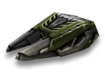

概括
磁力炮就像手术刀一样，既可以是医疗工具，也可以是武器。
虽然它是能够治愈队友的主要炮塔（唯一的另一个是带有治疗发射器增强的镭射炮），
但它在三种纯近战远程武器（火焰炮和冰风暴）中也具有最高的每秒伤害等级，
尽管它的缺点是一次只能对敌人消耗五秒钟。再加上它一次只能瞄准一辆坦克的事实，
通常使它不适合在前线进行无意识的横冲直撞。
然而，在瞄准盟友时有了光束，它的能量消耗率改为 12 秒，吸引了众多团队玩家。
在 Tanki Online 中扮演医生的角色很有趣，但不可否认，并不是每个人都适合。
但是，需要注意的是，磁力炮是快速收集经验值的绝佳工具（治疗其他坦克的伤口可以为用户提供经验值）。
车库中的描述
远程炮塔。可以通过多个坦克射击。有一个小的发射延迟。
近战炮塔。只能伤害一个目标。可以修理友军坦克。
具有有限的能量容量，随着时间的推移充电。
量子物理学和纳米技术的研究为直接从工厂生产的简单焊接机提供了一系列令人印象深刻的能力。
这个新的奇迹炮塔的核心是一个纳米机器人发生器，能够复制或破坏任何非有机材料的结构。
安装在炮塔上的脉冲发射器允许在几十米距离内的磁通道内传输纳米质量。
纳米机器人可以轻松识别目标，并快速将装甲分解成分子或缓慢修复它。
这样炮塔就可以对敌人造成大量伤害并修复友军，这在团战中尤为重要。
不幸的是，如果没有专门的增强装置，就不可能修理自己的坦克。
装备改造
防御模块
射击效果
皮肤

磁力炮标准
磁力炮 XT